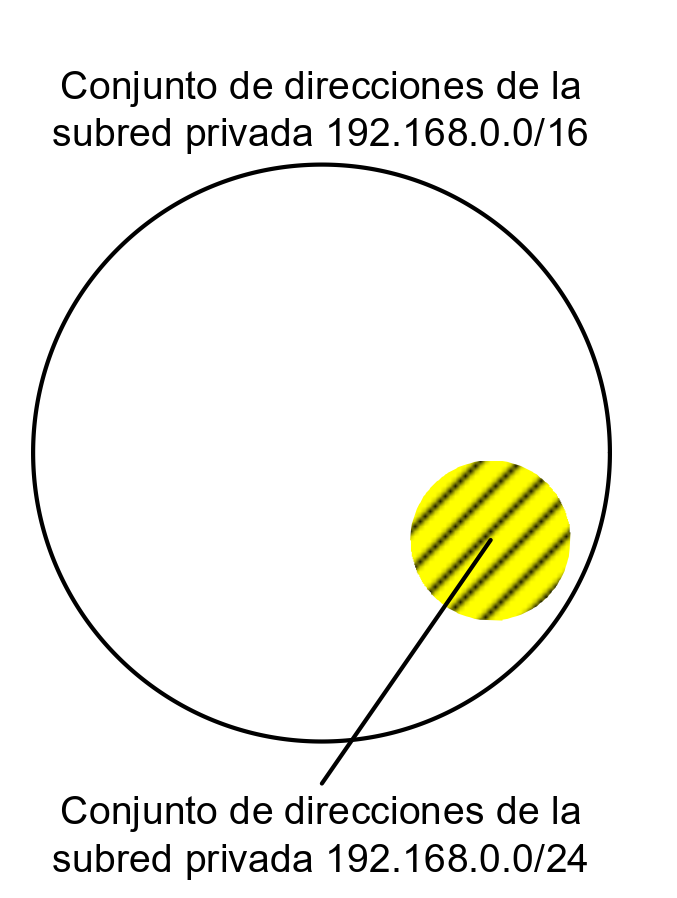
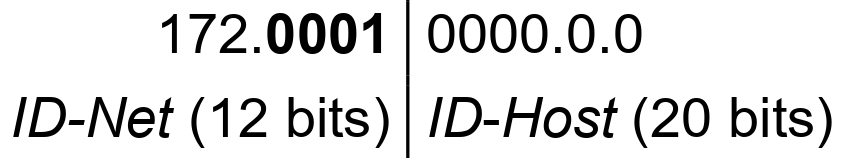
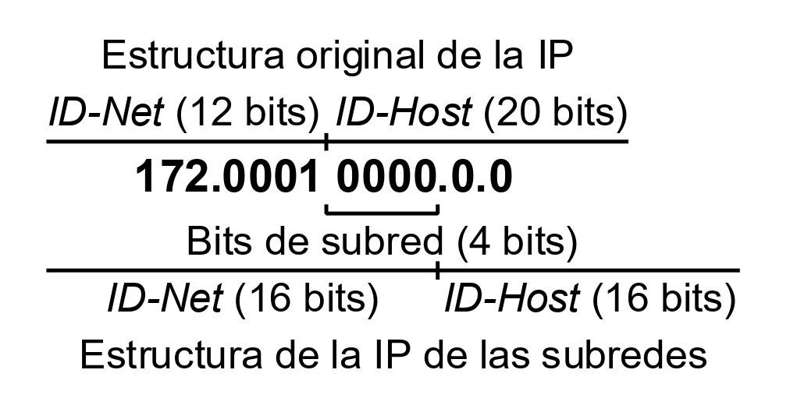
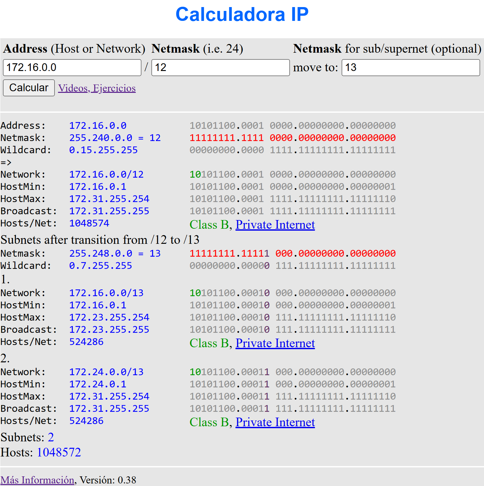
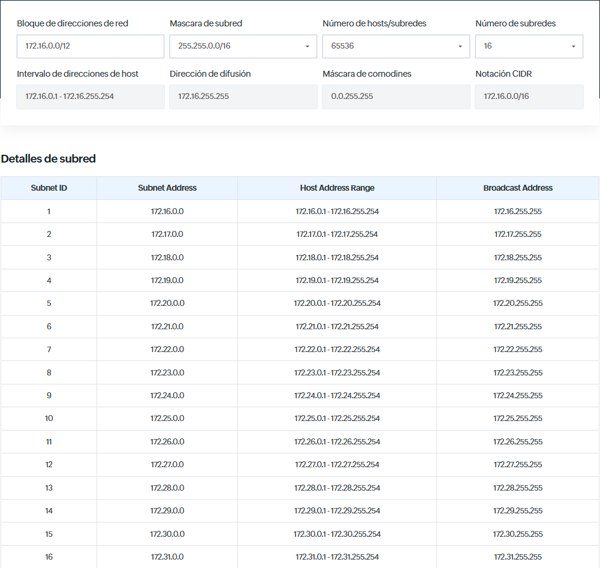

Subnetting
- Subnetting
- 1. Introducción
- 2. Comprender el subnetting mediante un ejemplo
- 3. Calculadoras de subnetting en línea
- 4. Origen y evolución del subnetting
1. Introducción
Una operación muy habitual al trabajar con direccionamiento IPv4 es la obtención de subredes a partir de una red dada. Este proceso permite dividir un espacio de direccionamiento plano en partes más pequeñas y manejables, conocidas como subredes.
En otras palabras, crear subredes consiste en definir distintos subconjuntos de direcciones IP dentro del conjunto original. Esto puede verse de forma ilustrativa en la imagen siguiente, donde la subred 192.168.0.0/24 se muestra como una parte del espacio total de la red 192.168.0.0/16.

2. Comprender el subnetting mediante un ejemplo
Para comprender el proceso, partiremos del ejemplo de la red privada 172.16.0.0/12.
El primer paso consiste en analizar la estructura de la dirección IP con la que vamos a trabajar.
Al tener un prefijo de longitud 12 bits, la máscara de subred correspondiente indica cómo se dividen las partes del ID de red (ID-Net) y del ID de host (ID-Host).

En el cuadro anterior puede observarse esta división: los 4 bits más significativos del segundo octeto (en binario) pertenecen al ID-Net, mientras que los 4 bits restantes de ese mismo byte forman parte del ID-Host.
Pues de lo que se trata es de obtener tantas subredes, como se necesiten, partiendo de esa estructura, teniendo muy presente que la configuración actual de la parte del ID-Net es intocable, de manera que el conjunto de bits que forman el ID-Net del cuadro anterior no se puede cambiar.
2.1. Obtención de las subredes
Supongamos que se desea obtener 16 subredes a partir de la red 172.16.0.0/12.
Para ello, debemos determinar el número mínimo de bits necesarios para codificar esas subredes distintas.
El cálculo se realiza mediante la fórmula de las variaciones con repetición, que determina el número de combinaciones posibles de subredes en función de los bits utilizados:
N = 2n
Donde:
- N → número total de subredes posibles
- n → número de bits tomados (prestados) del ID-Host para formar subredes
Nosotros queremos obtener 16 subredes así que, debemos buscar un número de bits (n) tal que 2n = 16. La solución será n=4. Ya que:
2n = 16 → n = 4
Esto significa que con 4 bits pueden generarse 16 combinaciones binarias diferentes, y por tanto 16 subredes posibles.
Al aplicar la fórmula, hemos comprobado que se requieren 4 bits para representar las 16 subredes necesarias.
2.2. Proceso de subnetting
El siguiente paso consiste en realizar la operación de subnetting, que implica tomar bits de la parte del ID-Host y añadirlos al ID-Net. En este caso, se incorporan 4 bits del ID-Host al ID-Net, respetando siempre los bits originales del ID-Net de la red base.
En la siguiente tabla se muestra el resultado de esta operación:

- El ID-Net pasa a ocupar 16 bits.
- El ID-Host queda también con 6 bits.
- La longitud del prefijo aumenta de /12 a /16.
- La máscara de subred cambia de
255.240.0.0a255.255.0.0.
2.3. Resultado final
A partir de este proceso, se pueden definir las subredes resultantes, que quedan recogidas en la siguiente tabla:
| Subred | Bits de subred | IP de subred | Rango de IP de la subred | Rango de IP de equipos |
|---|---|---|---|---|
| 0 | 172.00010000.0.0 | 172.16.0.0/16 | 172.16.0.0 a 172.16.255.255/16 | 172.16.0.1 a 172.16.255.254/16 |
| 1 | 172.00010001.0.0 | 172.17.0.0/16 | 172.17.0.0 a 172.17.255.255/16 | 172.17.0.1 a 172.17.255.254/16 |
| 2 | 172.00010010.0.0 | 172.18.0.0/16 | 172.18.0.0 a 172.18.255.255/16 | 172.18.0.1 a 172.18.255.254/16 |
| 3 | 172.00010011.0.0 | 172.19.0.0/16 | 172.19.0.0 a 172.19.255.255/16 | 172.19.0.1 a 172.19.255.254/16 |
| 4 | 172.00010100.0.0 | 172.20.0.0/16 | 172.20.0.0 a 172.20.255.255/16 | 172.20.0.1 a 172.20.255.254/16 |
| 5 | 172.00010101.0.0 | 172.21.0.0/16 | 172.21.0.0 a 172.21.255.255/16 | 172.21.0.1 a 172.21.255.254/16 |
| 6 | 172.00010110.0.0 | 172.22.0.0/16 | 172.22.0.0 a 172.22.255.255/16 | 172.22.0.1 a 172.22.255.254/16 |
| 7 | 172.00010111.0.0 | 172.23.0.0/16 | 172.23.0.0 a 172.23.255.255/16 | 172.23.0.1 a 172.23.255.254/16 |
| 8 | 172.00011000.0.0 | 172.24.0.0/16 | 172.24.0.0 a 172.24.255.255/16 | 172.24.0.1 a 172.24.255.254/16 |
| 9 | 172.00011001.0.0 | 172.25.0.0/16 | 172.25.0.0 a 172.25.255.255/16 | 172.25.0.1 a 172.25.255.254/16 |
| 10 | 172.00011010.0.0 | 172.26.0.0/16 | 172.26.0.0 a 172.26.255.255/16 | 172.26.0.1 a 172.26.255.254/16 |
| 11 | 172.00011011.0.0 | 172.27.0.0/16 | 172.27.0.0 a 172.27.255.255/16 | 172.27.0.1 a 172.27.255.254/16 |
| 12 | 172.00011100.0.0 | 172.28.0.0/16 | 172.28.0.0 a 172.28.255.255/16 | 172.28.0.1 a 172.28.255.254/16 |
| 13 | 172.00011101.0.0 | 172.29.0.0/16 | 172.29.0.0 a 172.29.255.255/16 | 172.29.0.1 a 172.29.255.254/16 |
| 14 | 172.00011110.0.0 | 172.30.0.0/16 | 172.30.0.0 a 172.30.255.255/16 | 172.30.0.1 a 172.30.255.254/16 |
| 15 | 172.00011111.0.0 | 172.31.0.0/16 | 172.31.0.0 a 172.31.255.255/16 | 172.31.0.1 a 172.31.255.254/16 |
Se ha conseguido el objetivo propuesto: definir 16 subredes dentro de la red 172.16.0.0/12. Cada una de estas subredes constituye un subconjunto de la red original y todas son disjuntas, es decir, no se solapan entre sí.
Todas las subredes generadas son subredes privadas, ya que están dentro del rango reservados para uso interno en redes locales.
3. Calculadoras de subnetting en línea
En Internet existen numerosas herramientas que facilitan los cálculos de subnetting. Algunas de las más útiles son:
3.1. Calculadora IP (aprendaredes.com)
- Permite calcular todas las subredes a partir de una red base y una nueva máscara.
- Ofrece información detallada de la red original y de las subredes generadas, tanto en formato binario como decimal.
- Disponible en: 👉 aprendaredes.com
A continuación se muestra una captura de esta calculadora, donde se parte de la red 172.16.0.0/12 y se obtienen las dos subredes posibles al aplicar una máscara de 13 bits.

3.2. Calculadora de subred IPv4 (Site24x7.com)
- Realiza cálculos de subred a partir del bloque de direcciones, la máscara de red y el número máximo de hosts por subred.
- Determina automáticamente la dirección de difusión, la subred, la máscara de comodines Cisco y el rango de hosts resultante.
- Disponible en: 👉 Site24x7.com
A continuación se muestra una captura de esta calculadora, donde se parte de la red 172.16.0.0/12 y se obtienen un total de 16 subredes (el mismo ejemplo que hemos hecho anteriormente).

3.3. Herramientas en sistemas GNU/Linux
En sistemas GNU/Linux también existen utilidades que permiten realizar estos cálculos de forma automática. Algunas de las más conocidas son:
-
IPcalc → https://www.linux.com/topic/networking/how-calculate-network-addresses-ipcalc/
-
Subnetcalc → https://www.uni-due.de/~be0001/subnetcalc/
4. Origen y evolución del subnetting
El subnetting fue definido en el RFC 950 (1985). En este documento se recomendaba, por motivos de compatibilidad con equipos antiguos, no utilizar:
- La subred 0, cuyo identificador está formado por todos ceros.
- La subred 15, cuyo identificador está formado por todos unos.
Según estas recomendaciones, en el ejemplo actual no deberían usarse las subredes 0 y 15, ya que cumplen esas condiciones.
En 1995 se publicó el RFC 1878, que declaró obsoleta la restricción del uso de las subredes con todos ceros o todos unos. Desde entonces, salvo en casos donde exista hardware muy antiguo, no hay impedimento técnico para utilizar dichas subredes.
Aun así, algunos autores siguen recomendando mantener las restricciones del RFC 950, como medida de precaución o por motivos de compatibilidad.
Optar por seguir uno u otro estándar tiene consecuencias importantes. Por ejemplo, si se decide cumplir el RFC 950, sería necesario usar 5 bits para las subredes. Con 4 bits no se podrían emplear ni la subred 0 ni la 15, lo que dejaría solo 14 subredes válidas.
Esto implicaría:
- Desperdiciar parte del espacio disponible (ya que 25 = 32 subredes posibles).
- Reducir significativamente el número de hosts por subred, al dedicar más bits al identificador de red.